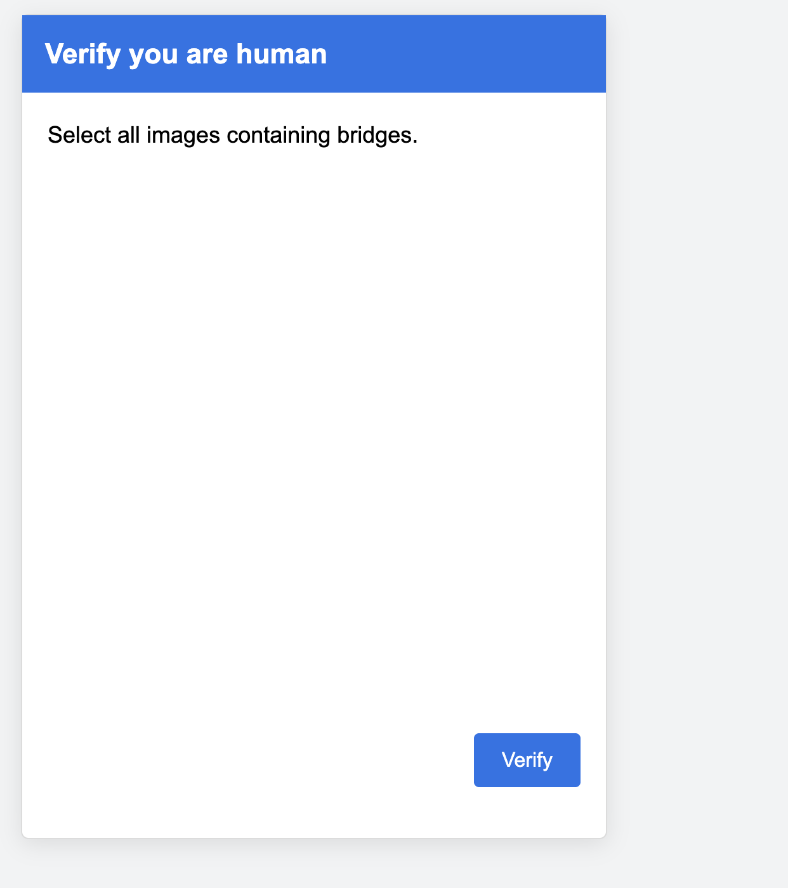

Surveillance CAPTCHA System

This project explores how CAPTCHA systems evolve into surveillance and behavioral tracking interfaces.
Interactive Work
Enter the System
Process

References
- Shoshana Zuboff – Surveillance Capitalism
- Palantir-style data aggregation systems